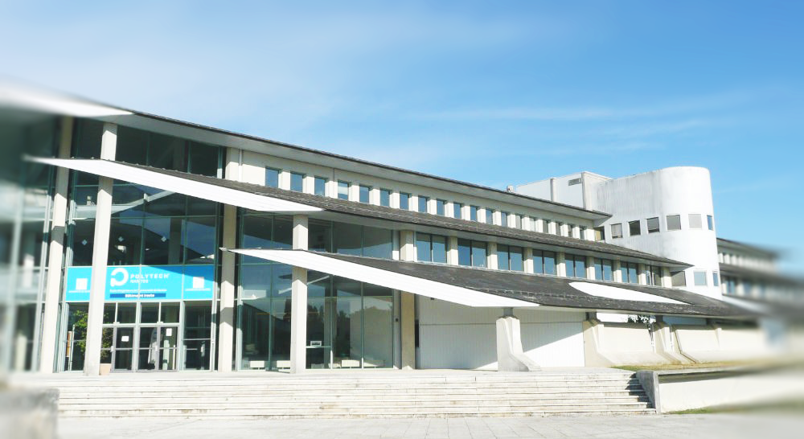

<div class="container">

    <section class="section">

        <h2 class="h1-responsive font-weight-bold text-center my-5">Présentation</h2>

        <!-- présentation -->
        <h2 class="font-weight mt-5">Qui suis-je ?</h2>
        <p class="text-justify">
            Bonjour. Tout d'abord, bienvenue sur ce site. Je m'appelle Simon LASSALLE, et je suis un jeune ingénieur
            en Informatique. Le but de ce site est de présenter les projets que j'ai acompli.
        </p>
        <!-- \présentation -->

        <!-- image -->
        <div class="view">
            
        </div>
        <!-- \image -->

        <!-- parcours -->
        <h2 class="font-weight mt-5">Parcours</h2>
        <p class="text-justify">
            J'ai obtenu mon Baccalauréat Scientifique en 2014, et je ne savais pas quelles étude poursuivre. Je
            connaissais peu de choses sur le métier d'ingénieur, si ce n'est que les débougés étaient très variés. Etant
            une sorte de continuation du lycée, j'ai choisi de suivre les classes préparatoires intégrées à l'école
            Polytech de l'Université de Nantes. Le fait qu'elles soient intégrées me convenait d'autant plus que la
            concurence entre les étudiants était moindre. De plus, Polytech est en fait un réseau de quinze écoles en
            France. Chacune d'elles prpopose un panel de spécialités différentes dans l'ingénierie, et à la sortie de
            prépa, je pouvais joindre n'importe quelle filière dans n'importe quelle école Polytech.

            En première année de prépa, j'ai écrit mon premier programme. Je n'avais jamais codé aparavant, et j'ai tout
            de suite apprécié l'aspect logique de la programmation. J'ai donc sans hésité choisi la spécialité
            Informatique.
        </p>
        <!-- \parcours -->

    </section>

</div>